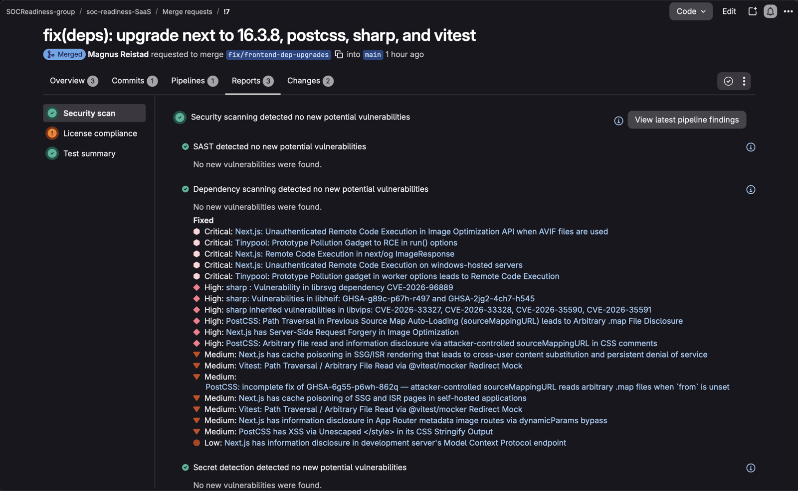
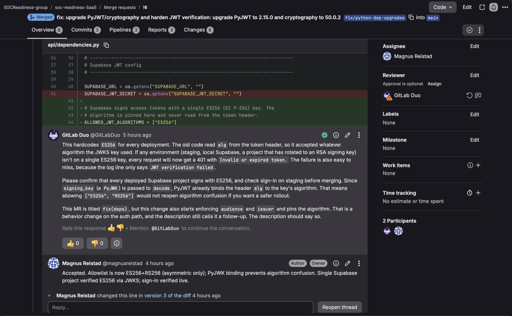

Building audit-ready change controls into a GitLab pipeline
This write-up covers one part of SOC Readiness SaaS: the GitLab CI/CD pipeline and security controls I built around it, and what they found in the platform's own code.
Why I built the pipeline
As a SOC 2 and SOX IT auditor, I test other people's change management controls: is the production branch protected, do changes need a passing pipeline, do security scans run, and did anyone act on the results? I wanted to be on the other side of that table. I moved SOC Readiness SaaS, a full-stack audit-readiness platform I built (Next.js, FastAPI, Supabase), into GitLab and built a pipeline whose controls map to NIST 800-53, SOC 2, and NIST SSDF, backed by evidence an auditor would accept.
What the pipeline does
Every merge request runs lint, test, and build, plus SAST, secret detection, and SBOM-based dependency scanning with static reachability, which shows whether a vulnerable package is actually imported. The production branch (main) is protected, and the "Pipelines must succeed" setting blocks a failing change from merging. I used GitLab's v2 dependency scanning template because the older analyzer is deprecated and scheduled for removal, and I baselined existing lint debt rather than rewriting working code in the same change.
Control mapping
Each row is a control the pipeline enforces, mapped to the requirements it helps satisfy in NIST 800-53 Rev 5, the SOC 2 Trust Services Criteria, and the NIST Secure Software Development Framework (SSDF). The purpose is to translate engineering settings into the language an auditor or a customer's security reviewer works in: instead of "we run SAST," the table shows which requirements that supports and whether the control is actually working. The status column makes that distinction explicit. "Operating" means the control is in place and backed by evidence such as settings, scan reports, and merge requests; "Design only" means it is configured but can't yet be shown working, like required approvals on a project with a single maintainer.
| Pipeline control | NIST 800-53 Rev 5 | SOC 2 | NIST SSDF | Status |
|---|---|---|---|---|
| Required MR pipeline (lint/test/build) | CM-3, CM-3(2), SA-11 | CC8.1 | PO.3.2, PW.8 | Operating |
| Protected branches | CM-5, AC-3 | CC6.1, CC8.1 | PS.1 | Operating |
| MR approvals | CM-3, AC-5 | CC8.1 | PW.7 | Design only |
| SAST | SA-11(1), RA-5 | CC7.1, CC8.1 | PW.7, RV.1, RV.2 | Operating |
| Secret detection | IA-5(7) | CC6.1 | PW.7 | Operating |
| Dependency scanning (SBOM) | RA-5, SI-2, SR-3 | CC7.1 | PW.4, RV.1, RV.2, PS.3.2 | Operating |
| Pipeline logs and artifacts retained | AU-11, CM-3 | CC4.1 | PO.3.3, PS.3.2 | Operating |
What the scanners found, and what they missed
SAST reported 20 findings. I traced every flagged value to its source before deciding: 16 false positives, 2 accepted risks, and 2 fixes, each recorded as a GitLab dismissal with a reason, so the rationale lives where a reviewer would look for it.
The most useful finding was one the scanner got wrong. It flagged an SSRF in the frontend API proxy, which was a false positive as reported, since the destination host is fixed by config. But tracing the path showed that encoded ../ segments could skip the proxy's own session check. I fixed that instead.
Reading the code behind an XXE finding surfaced a risk no scanner flagged: the upload limit applied to compressed size, so a crafted document could expand to gigabytes. GitLab Duo's review caught that my first guard protected the wrong parsing path, so I held the merge despite a green pipeline. The final fix guards all four parsers, with tests that fail if the guard is removed.
Dependency scanning reported 38 unique findings, and 35 are fixed. PyJWT, on the authentication path, carried 15 of them, and a Next.js security release cleared 19 more, including three critical remote code execution advisories. Because PostCSS and sharp were indirect dependencies, I confirmed the lock file actually resolved the fixed versions instead of assuming it. The remaining 3 are documented: one false positive caused by incomplete advisory data, and two dev-only packages with no fix that never ship to production.

The best result came from preparing the PyJWT upgrade. Inventorying its call sites showed the backend read the JWT algorithm from the token's own unverified header, letting the token choose how it would be verified. Forged tokens failed only as a side effect of the key type, and crashed with a 500. I restricted verification to asymmetric algorithms, bound the token's algorithm to the key, enforced audience and issuer, and made every JWT error return 401. The new tests fail against the old code, and I verified the change against the live identity provider before merging. When Duo pushed back that pinning a single algorithm would break on a key rotation, I agreed, widened the allowlist, and recorded the decision in the review thread.

What broke
I got a green pipeline I couldn't trust. While fixing how the scanner resolved Python dependencies, my MR passed every check but showed 13 tests instead of 50 and reported SAST findings I had already fixed. The branch had been cut from a local main that tracked GitHub, 11 commits behind GitLab, so the pipeline tested code that didn't match what would merge. I rebuilt the change on GitLab's main, mirrored GitLab to GitHub so the two can't drift, and now cross-check test counts instead of trusting a green check mark.
Known limitations
- Solo maintainer: approvals and separation of duties are design only.
- Scans inform, they don't block: security jobs are
allow_failure. - Coverage gaps: existing lint debt is baselined, and dev tooling isn't scanned yet.
What I'd do next
- A merge request approval policy that blocks new critical or high findings.
- Merged results pipelines, which would have caught the stale branch automatically.
- Hash-pinned lock files and a license approval policy, for supply-chain integrity.
- Fixed message codes on the login page. While reviewing new lint warnings for open redirects, I found it displays any
?message=text, which a crafted link could use for phishing.
The code is on GitHub: soc-readiness-SaaS.